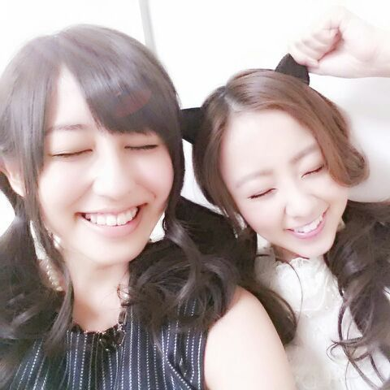
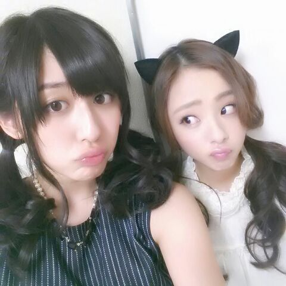

| 2013/10 29 Tue | 言わないで。そろそろ飽きたよっ て(´∨`)明日ちゃんと別 の写真せるからさっ、ね(・ω・* )？ ろってぃー |
ヒャァーー ☆☆☆
ろってぃーだ〜(*´∇｀*)
トリャー !!!!

どーだ。 効いたか〜？
黒耳Rottyで色んなメンバーと
お写メンさん撮らして頂いたから
まだ貼り終わらんってゆーね。笑
いいかげん 飽きますぅ〜。
とか思っちょるんやろ〜う ？プィ
うわっ、 そんなんやったら
もっと貼ったるねーん\>▽< /
えいっ ！

ちーちゃん〜(*´∇｀*)
にこにこ えーがお。
う〜 ...えいっ ！

変顔〜。
うー えいっ！
・・・・・・
あれ？ もう貼れないみたい。
後 ひなちま らりんの写真が残ってるの...
あっ！ そうだ。
27日の文化放送での放送は
日本シリーズ中継があるため
乃木ののが中止になっちゃった。
でも 楽天さんはどこまでも
強いね(о´∀`о)
おめでとうございます！！
明日10/29の blogはあのメンバーについて書かなきゃね〜\(*´∇｀*)/
とゆうことで以上っろってぃーでしたぬき。
皆 好きだよ。
おやすみなちゃい。(/-＼*)
乃木ののが中止になっちゃった。
でも 楽天さんはどこまでも
強いね(о´∀`о)
おめでとうございます！！
明日10/29の blogはあのメンバーについて書かなきゃね〜\(*´∇｀*)/
とゆうことで以上っろってぃーでしたぬき。
皆 好きだよ。
おやすみなちゃい。(/-＼*)
コメント(146)
2013/10/29 00:30